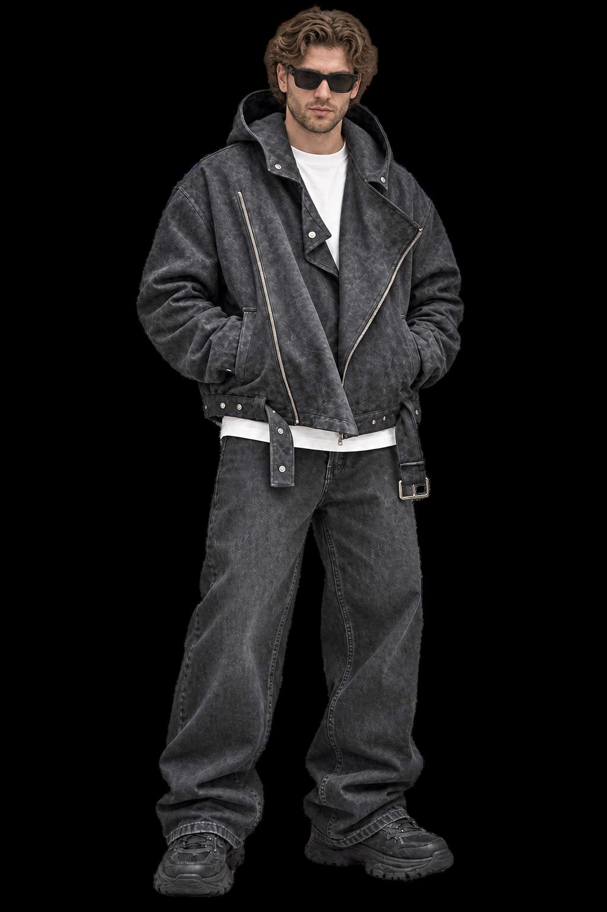
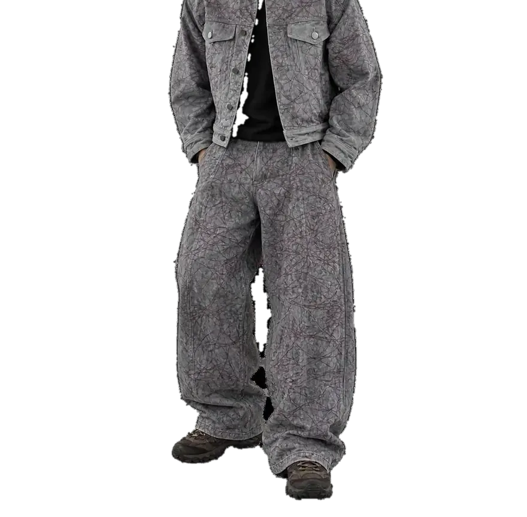
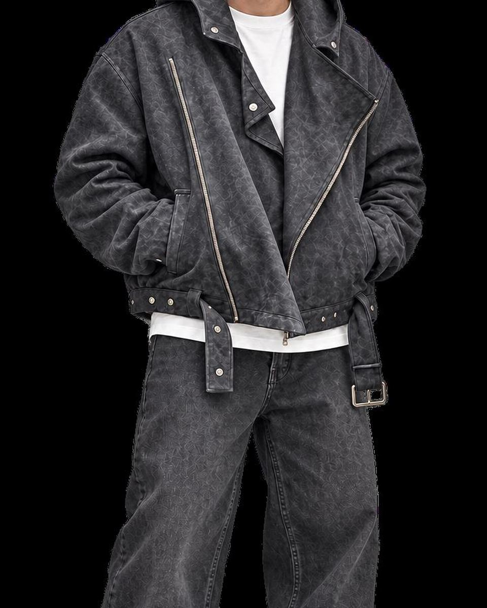
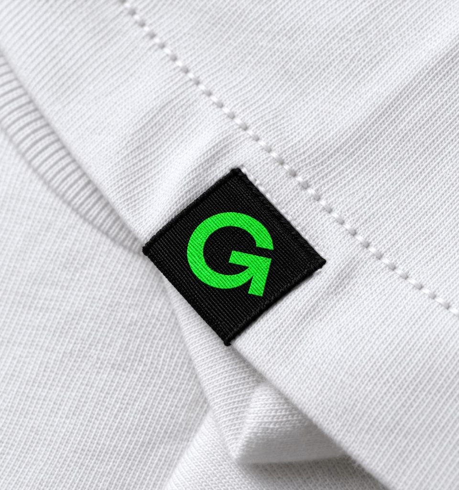
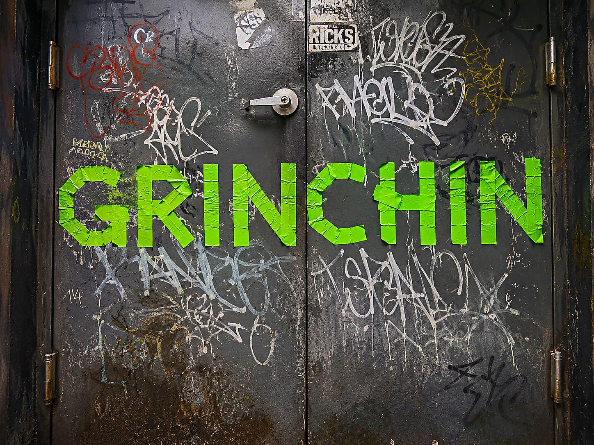

Ignore the signs
одежда для тех, кто не идёт по заданному маршруту
Смотреть дропДроп 0108
предзаказ · отправка с 01.12 · эскизы, фото после съёмки
Образы





One way
or another.
- Знаки решают за тебя.
- Стоп — это тоже старт.
- Ignore the signs.
Разобрали — вернём.
Дату перезапуска скажем тем, кто подписан.
Есть. Ты в списке.
Напишем в Telegram.